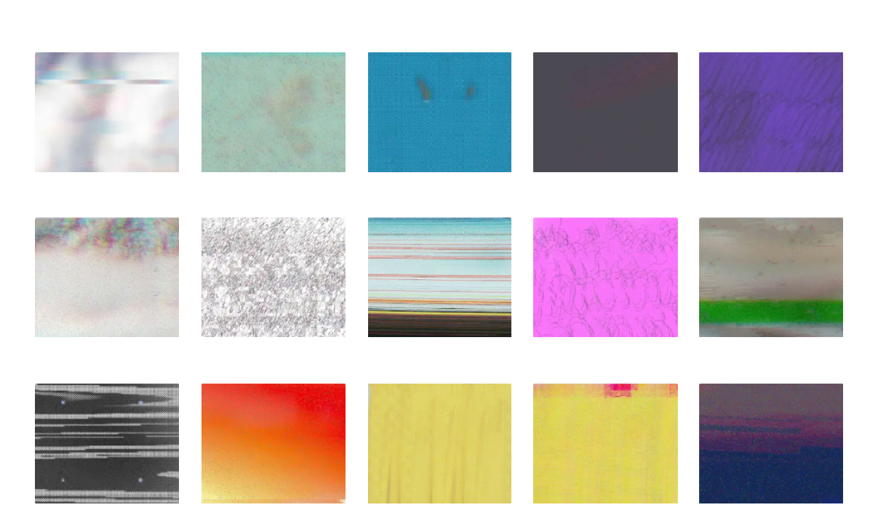
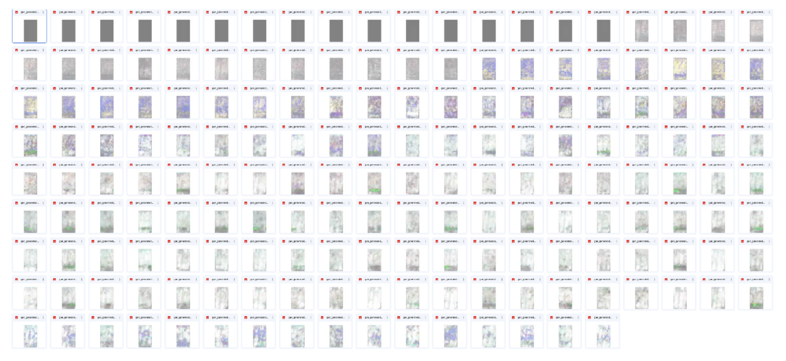
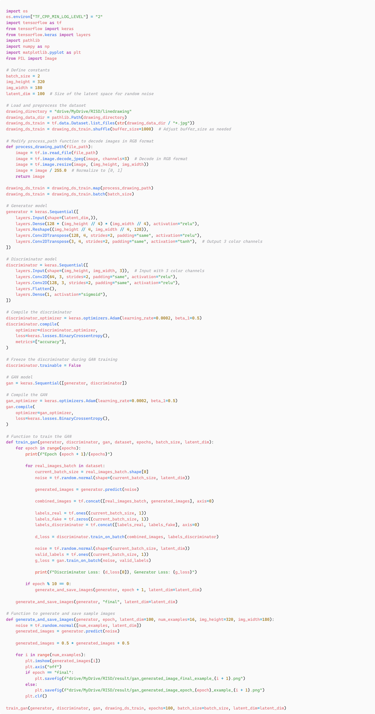

Drawing to Drawing, Digtital drawing, 2023
"Drawing to Drawing" is a project that Ji-ho trains drawings on a machine he developed himself.
The digital drawing on the left was created by the artist, and the drawing on the right is machine-generated based on what it learned from the left drawing.
Initiating questions about the act of drawing through a machine that learns and draws pictures at the pixel level, he explores the relationship between the drawings created by the artist and those generated by the machine.
"Drawing to Drawing"은 직접 개발한 머신에 그림을 훈련시켜 그리는 프로젝트입니다.
왼쪽의 디지털 그림은 아티스트가 그린 것이고, 오른쪽의 두 그림은 왼쪽 그림에서 학습한 내용을 바탕으로 기계가 생성한 드로잉이다.
하나의 픽셀에서 학습하여 그려나가는 머신을 통해, 그림을 그린다는 행위에 대한 질문을 시작으로, 작가가 그린 드로잉과 머신이 그린 드로잉을 어떠한 관계에 놓을수 있는지에 대해 고민한다.
- Drawing Dateset


- Generated drawings

- Soruce code
